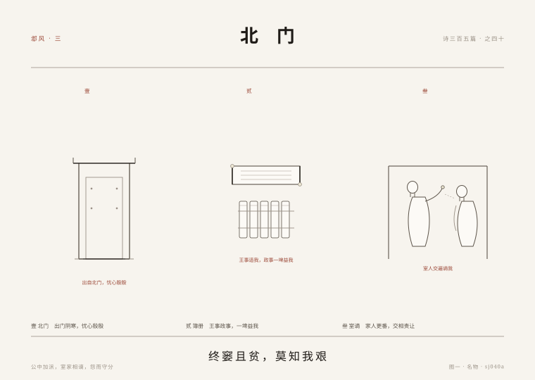
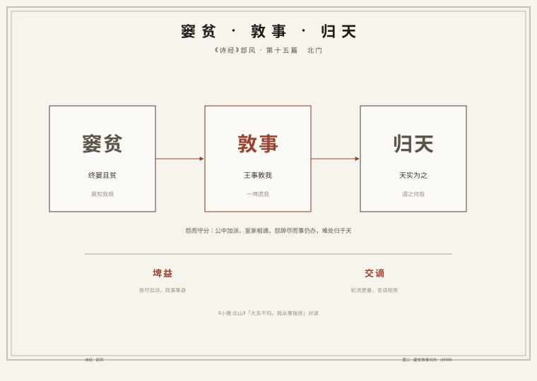

第四十篇 北门
邶风 · 之三 SJ040
朗读 · 普通话
依经文原文朗读，章次不读出；配古琴底乐，不改速、不加拖腔。全库同一音色（豆包 TTS），非播音员录制。
一 解题
诗三判：
- 谁在说：一个在王室与公室之间供职、位卑禄薄的小臣。他从北门出门，忧心重重；王事政事一桩桩推到他身上，回家又被家人交相接责；三章一叹再叹，最后只把这一切归之于天。
- 说什么事：走出北门，忧心殷殷；既窭且贫，没人知道我的艰难。算了吧！天实在是这样安排的，还能说什么呢？王事派给我，政事全加到我身上；我从外面回来，家里人轮流责备我。算了吧！天实为之，谓之何哉！王事又逼迫我，政事一古脑留给我；我从外面回来，家里人又一齐摧折我。算了吧！天实为之，谓之何哉！
- 为何编在此：《泉水》写女子思归不得，此篇写小臣任职不得志。同在「不得」之中：彼不得归，此不得伸；怨而守分，公事仍办，是邶风这批诗里「在下者」的另一面。
《毛序》：「《北门》，刺仕不得志也。言卫之忠臣不得其志尔。」——以为忠臣仕于乱世，志不得伸，国人刺之。
朱子《诗集传》：「贤者不得志于仕者，……故以北门而出，言其不得志也。」——朱子从贤者仕不遇时立说。
本库的看法：这首诗的骨在「终窭且贫」——怨而守分，怨辞尽而事仍办。
三章反复：王事适我、敦我，政事埤益、埤遗，室人交遍谪我、摧我；公中加派，家中又责，两头受压。可是他不出怨言于同僚，不抗命于公事，只三叹「天实为之，谓之何哉」。怨是真怨，分是仍守；把难处推给天，不是推给人。
二 经文
第一章
出自北門，憂心殷殷。終窶且貧，莫知我艱。已焉哉！天實為之，謂之何哉！
第二章
王事適我，政事一埤益我。我入自外，室人交遍謫我。已焉哉！天實為之，謂之何哉！
第三章
王事敦我，政事一埤遺我。我入自外，室人交遍摧我。已焉哉！天實為之，謂之何哉！
分章：毛传、朱子皆三章，章七句。一章出门自叹窭贫；二章王事加派、室家相谪；三章事更重、责更甚。三章末四句同字同叹，章法是一层压一层，叹词作底。
三 韵读
| 一 |
門、殷、貧、艱；哉、何 |
文部／魚部 |
| 二 |
適、益、謫；哉、何 |
錫部／魚部 |
| 三 |
敦、遺、摧；哉、何 |
微部／魚部 |
一章文部沉郁闭口，状忧心殷殷；二章錫部入声短促，加派与责难之声紧接；三章微部低回，摧折之后转入长叹。三章叹脚同押「哉、何」魚部，一句唱三遍，话在变，收束不变。全篇落脚声是「谓之何哉」——归于天，无可再说。
四 字义与名物
- 北門——城之北门。出北门而仕；一说北门阴寒，以喻处境之暗。
- 殷殷——忧盛貌，心神沉重。
- 終窶且貧——既窭又贫。终，既；窭（jù），贫而无以为礼；且，又。不是「终于」之终。
- 莫知我艱——无人知我艰难。
- 已焉哉——算了吧。已，止；焉哉，皆语助。
- 天實為之——天实在造成这样。实，是；为，造成。
- 謂之何哉——奈之何，还能说什么呢。
- 王事適我——王事派给我。适，往、派付。不是「适合」之适。
- 政事一埤益我——政事全加到我身上。一，皆、尽；埤（pí）益，增益、加给。
- 室人——家中之人。
- 交遍——轮流、更番，交相普遍。
- 謫（zhé）——责让、责备。
- 敦我——王事逼迫我。敦，厚、迫，督责推付。
- 一埤遺我——政事全遗留、加给我。遗，遗留、加付。
- 摧我——摧折、讥责我。摧，挫；一说通「瘁」。
- 天實為之，謂之何哉——归于天，不作怨人语。
五 今译
第一章
走出北门，忧心沉沉。既窘迫又贫寒，没人知道我的艰难。算了吧！天实在是这样安排的，还能说什么呢！
第二章
王事派给我，政事全加到我身上。我从外面回来，家里人轮流责备我。算了吧！天实在是这样安排的，还能说什么呢！
第三章
王事又逼迫我，政事一古脑留给我。我从外面回来，家里人又一齐摧折我。算了吧！天实在是这样安排的，还能说什么呢！
译注：「终」译既；「窭」译贫而无以为礼；「适」译派付；「一」译皆、尽；「埤益」译加给；「交遍」译轮流更番；「谪」译责让；「敦」译逼迫；「遗」译遗留加付；「摧」译摧折。
六 章旨
一章：出门自叹。北门之忧，窭贫之艰，无人知我。
二章：公加派而家相谪。王事政事集于一身，入室又受责让。
三章：事弥重而家弥摧。敦我遗我，摧我再至；叹词同前。
一章是处境，二、三章分公中与家中两头受压；三章末四句三复「天实为之」，把怨往上归到天，不往下指到具体的人。事仍一件一件办，话只一声一声叹——怨而守分，是此篇的骨。
七 诗教
- 赋：直陈出门、受事、归家被谪，三章皆赋；无比兴之托，苦况从实事中见。
- 观：可观一「役」。位卑禄薄之臣，公事独任、家事独任；观古之下层吏职之难，此篇是标本。
- 群：身在王事政事之群中，却不见恤于同僚；入室又与室人相忤，群中而失其相恤。
- 怨：怨在窭贫、在加派、在见谪；怨止于叹天，不骂上、不尤下、不废事。
八 分寸与边界
- 不可把「终窭且贫」的「终」解作「终于」。终是既，「终……且……」即既……又……。
- 不可把「窭」只解作贫穷。窭是贫而无以为礼，比贫更进一步：礼文上周转不开。
- 不可把「王事适我」的「适」解作「适合」「舒适」。适是往、派付，王事派到我身上。
- 不可把「交遍谪我」解成「家里人都普遍憎恨我」。交遍是轮流更番责让，谪是言语之责，不是深仇大恨。
- 不可把「天实为之，谓之何哉」读作听天由命的消极颓唐。诗是怨而守分：难处归于天命，公事并不推掉；颓唐弃事须看上下文，本库不取。
九 存疑
- 所刺之人：《毛序》以为卫之忠臣不得志；朱子以为贤者仕不遇；一说泛言下层小吏。本库取「仕不得志之小臣」，不坐实姓名。
- 「敦我」之敦：一说厚待、加厚，一说逼迫、督责；与「适我」「埤遗」对文，本库从逼迫。
- 「埤遗」之遗：一说遗留、加付，一说「遗」读
wèi，赠与。本库取加付遗留。
- 「摧我」之摧：毛传「摧，沮也」；一说通「瘁」，劳瘁。本库取摧折责让，存瘁义。
- 北门之喻：实指城北门，一说北门阴寒以喻昏暗之世。本库两存，取出门实景兼喻处境。
十 跨典
- 《小雅·北山》「大夫不均，我从事独贤」——同是怨役之不均；彼直叹劳逸不平，此归之于天而守分。
- 《论语·宪问》「不怨天，不尤人」——北门三叹「天实为之」近之；孔子处下不尤人，此臣处下归于天，气象有别而底线相通。
- 《王风·黍离》「知我者谓我心忧，不知我者谓我何求」——同是莫知我艰；彼行役过故都，此供职于家门。
- 《邶风·击鼓》「不我以归，忧心有忡」——同卷之忧；彼从军嗟绝，此仕宦嗟窭。
- 《礼记·坊记》「君子弛其亲之过而敬其美」——室人交谪而诗不暴其家丑，怨而不失其亲，可与对读。
十一 双卡与图
双卡五对：
| 终（既） |
终于（误训） |
| 窭（贫而无礼） |
单纯贫穷（浅训） |
| 适（派付） |
适合（误训） |
| 交遍（轮流责让） |
普遍憎恨（重训） |
| 怨而守分 |
怨而废事 |

图一 · 北门·王事簿册·室谪 名物图

图二 · 窭贫—敦事—归天 义理图
读图三处：
- 北门画门阙与门洞：名物图取城北门两侧门柱、门洞与门槛三处可辨结构；不画整座城池。
- 簿册与束简是王事实物：二章「政事一埤益我」，图上置简册与卷轴；册上只列简绳与编痕，不书具体文案。
- 义理三格是一条受压之链：窭贫—敦事—归天，箭头由处境入公事，末格收于天；两尺标出「埤益」「交谪」，见公家中室家两头受压。